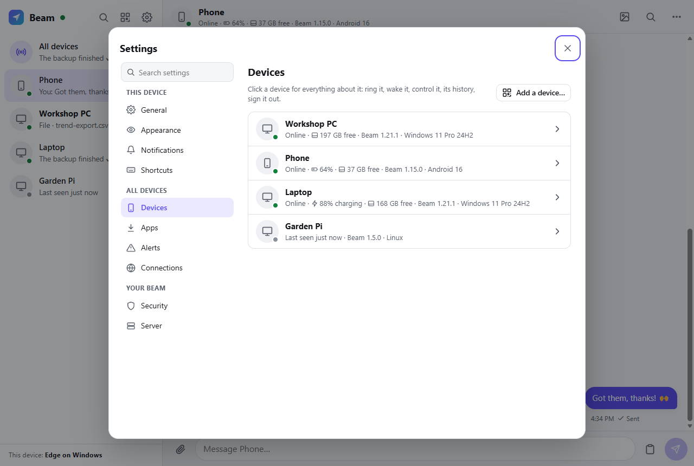
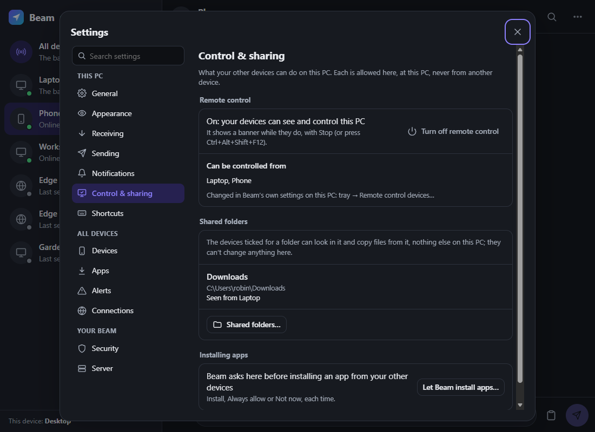

What it does
Anything, to any device
Text, links, photos and files of any size, to one device or all of them at once.
Your phone, on your PC
Your phone's notifications show on your PCs, and you can reply from there. Lost the phone? Ring it.
Your PCs, from anywhere
Wake a sleeping PC, or see and control its screen from another device, over your own tailnet.
Beam Family
Your family's own chat, in the spirit of Discord: channels, direct and group conversations, photos and files, replies, reactions, search. A separate server, so it can face the internet without reaching the one that controls your PCs.
Scripts and automations
The beam command line, a plain HTTP API and iPhone Shortcuts: anything that can make a request can send to your devices.
Runs on what you have
The server is plain Node.js on a computer that stays on, or in Docker on a NAS. A Raspberry Pi or another Linux computer can join as a device. Any browser is a client, and installs to the home screen like an app.
On every device
| Anything with a browser | The web app (iPhone, Android, Mac, Linux, Chromebook, Windows), which installs like an app |
|---|---|
| Windows | An optional tray app, Beam.exe, built from source: one self-updating file, with the same chat window |
| Android | An optional native app, beam.apk, built from source: the share sheet, phone notifications on your PCs, ringing, remote control |
| Scripts and terminals | The beam command, or plain HTTP |
The browser is all you need to start. The native apps add system integration. There are no downloads of them, here or on the releases page: you build them from source (how), signed with your own keys, and your Beam hands them to your devices.


Made-up devices on a test server.
Get started
On a computer that stays on
You need Node.js 22.13 or later and Tailscale, signed in (the free plan is plenty).
git clone https://github.com/jamesccupps/Light-Beam.git cd Light-Beam npm install node server.js
Then share it over Tailscale, HTTPS and reachable only by your own devices:
tailscale serve --bg http://127.0.0.1:8765
Then on each device
Sign in to the same Tailscale account and open https://<your-computer>.<your-tailnet>.ts.net. The first account to sign in becomes Beam's owner, and your devices sign in by themselves from then on.
On Windows, one script runs the server hidden at every sign-in, shares it over Tailscale and installs the tray app, already paired. The README has the details.
Private by design
Your server, your devices
- Every device has its own sign-in; removing one signs it out and wipes what Beam saved on it.
- Signing in through Tailscale trusts only identities Tailscale vouches for, at this Beam's own address.
- The data folder is locked to the account Beam runs as; app updates install only when signed with your key.
Where it stands
A personal project, now open source, used every day on Windows 11 PCs, an Android phone and a Raspberry Pi. The server's tests run on Linux and Windows; macOS, the systemd unit and the Docker files haven't been tested yet. Reports and fixes are welcome.